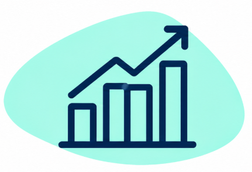
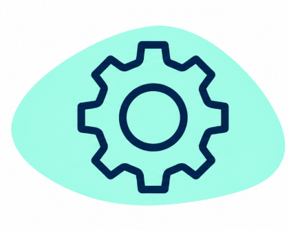
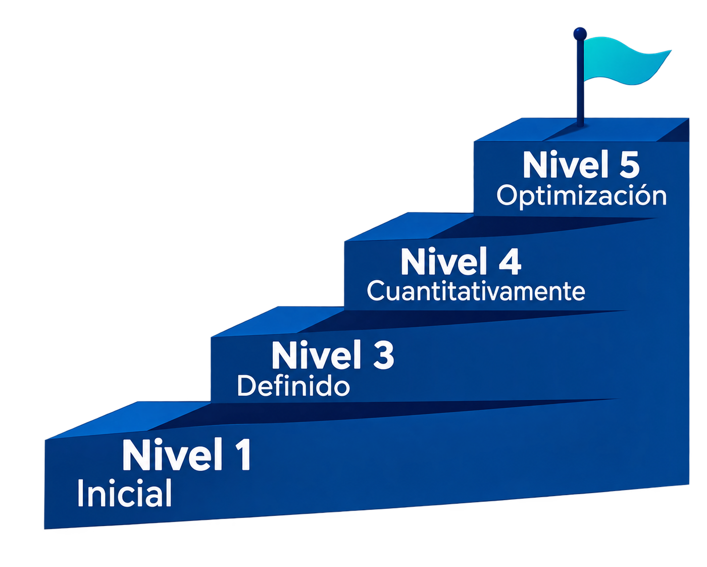
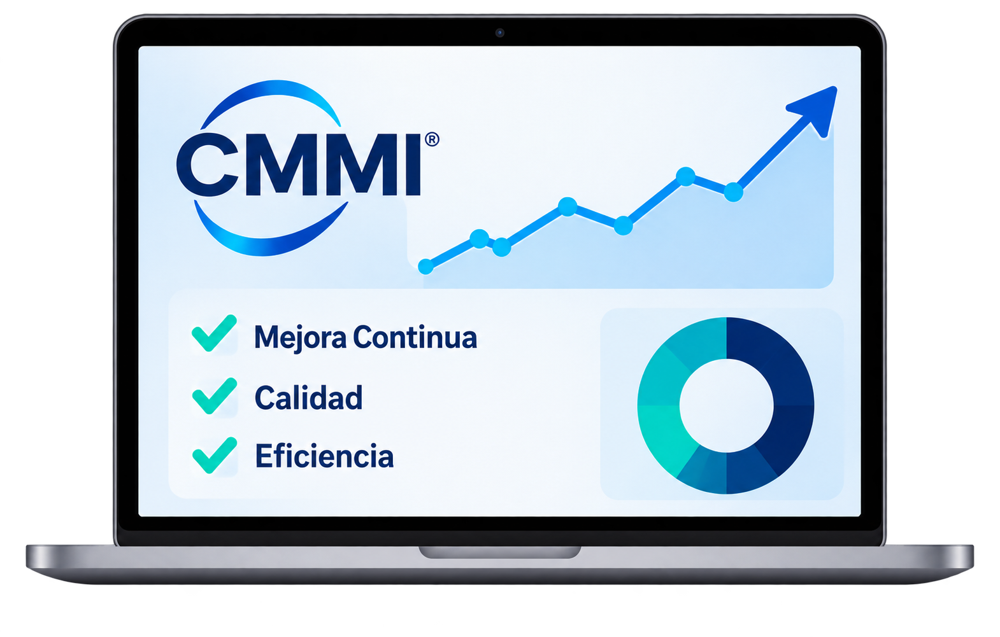

El modelo CMMI guía a las organizaciones en la mejora de sus procesos de trabajo, permitiendo aumentar la calidad, optimizar los recursos y alcanzar sus objetivos de negocio.
Es un modelo de mejora de procesos que ayuda a las organizaciones a ser más eficientes, predecibles y competitivas.

Optimiza los procesos de trabajo mediante evaluaciones y mejoras constantes.
Permite entregar productos y servicios con mayor calidad y confianza.

Ayuda a utilizar mejor los recursos, reducir errores y mejorar los resultados.
CMMI ofrece cinco niveles de madurez que permiten evaluar y mejorar los procesos de una organización, desde una gestión inicial hasta la optimización continua.


Implementar CMMI permite mejorar la organización del trabajo, aumentar la productividad, controlar los riesgos y entregar productos y servicios que cumplan con las expectativas de los clientes.